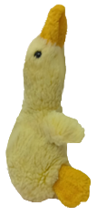
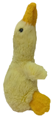

Coucou les copains canards, vous êtes sur mon site trop bg j'espère vous allez kiffer les coincoin <3
Site réalisé en projet de spécialité Numérique et Sciences informatiques pendant mon année de première au lycée Touchard Washington au Mans. Dans la page 'Cointact', vous trouverez différents projets que j'ai réalisé en python lors de mes années de première et de terminale.